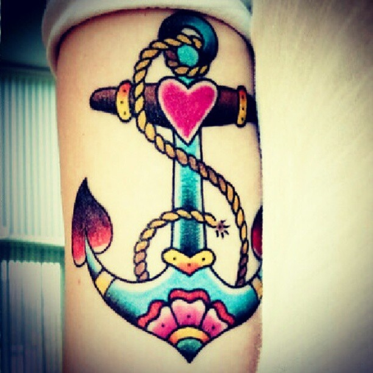
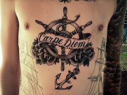
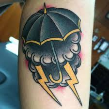
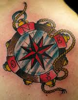
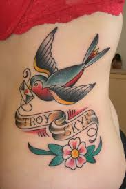
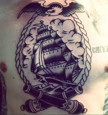

OLD SCHOOL TATTOO
Los tatuajes de la vieja escuela, o mejor dicho los tatuajes tradicionales, son los primeros que acuden a nuestras mentes cuando pensamos en la tinta en la piel. Estas imágenes son algunas de las más icónicas y fácilmente reconocibles entre la gran variedad de diseños de tatuajes de la que disponemos a día de hoy. Puedes imaginarte esa obra de arte adornando el bíceps de un joven marinero luchando por el rey y la patria, o de un fiero pirata aterrorizando los siete mares. Por lo tanto, no es ninguna sorpresa que los marineros y los piratas fueran los pioneros occidentales del tatuaje.

Mas Diseños de Old School tattoo




